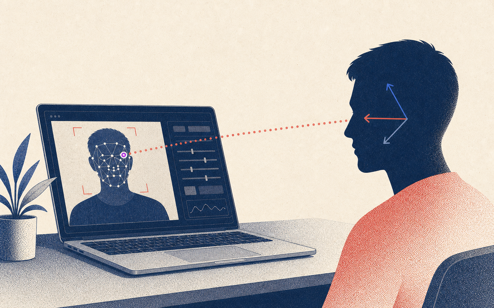
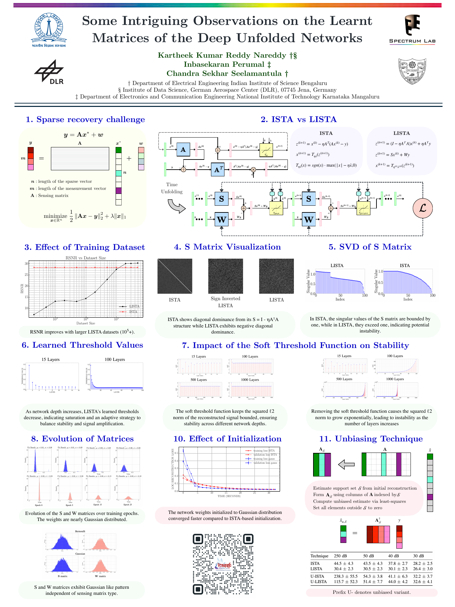
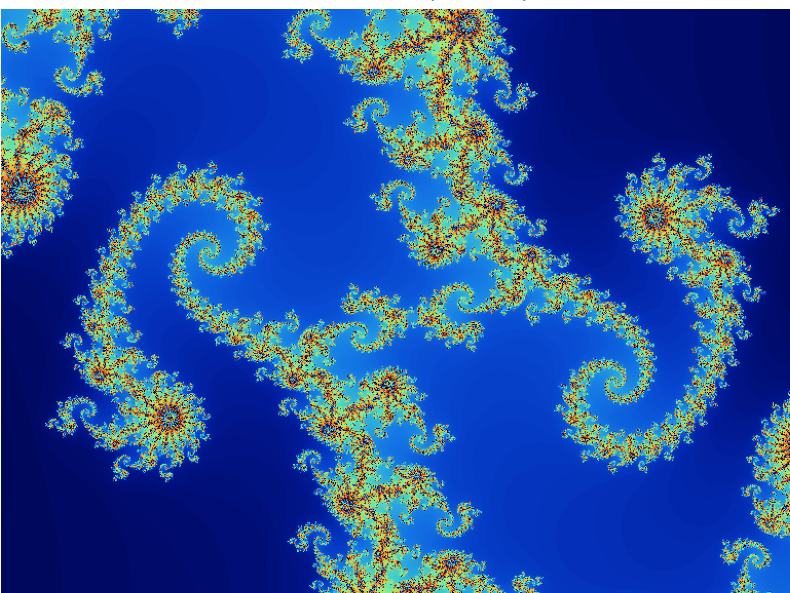
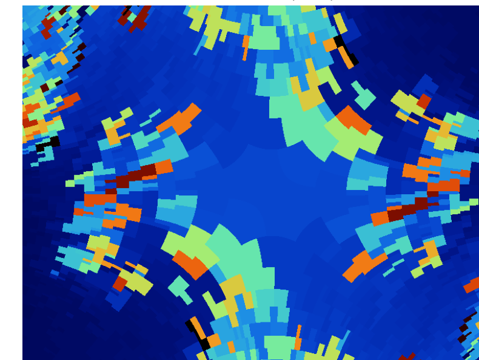
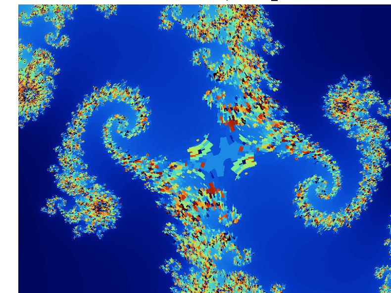

RingCentral
Jul 2024–PresentSoftware Development Engineer II · ACE
Search, agentic workflows, and software systems for ACE.
ACE · MCP app offering
ACE offers an MCP app that brings governed data, permissions, and product workflows into the AI workspace.
I am building the GraphQL and MCP layers behind it, from governed schema exposure and tool design to the app experience and plugin delivery.
VisionGuard · Google Summer of Code
VisionGuard is a webcam-based desktop application that distinguishes looking at the screen from looking away, turning that signal into private screen-time feedback and break reminders.
I built the C++ application, calibration flow, and local inference path with OpenVINO, Qt, and OpenCV.

At IISc’s Spectrum Lab, I worked on inverse problems in imaging: recovering images from incomplete or noisy measurements. Using deep-unfolded networks, which are learned versions of iterative optimisation, I studied how update matrices, thresholds, and initialization shape stability and reconstruction.
This research appears in the ICASSP 2025 paper, Some Intriguing Observations on the Learnt Matrices in Deep Unfolded Networks.

Linux Foundation Mentorship · SoftPosit / RISC-V
In the Linux Foundation Mentorship, I extended SoftPosit C++ for RISC-V through mathematical functions, tests, packaging, and an emulated toolchain, so alternative arithmetic could be exercised in real workloads.
Across Mandelbrot and Julia workloads, I benchmarked conventional floating-point formats against posit arithmetic.
The work became a CoNGA 2025 paper on numerical accuracy and performance in HPC.

Reference

SSIM 0.476 · MSE 0.087

SSIM 0.605 · MSE 0.053
Against the same double-precision reference, posit32 retains more of the fractal structure in this run.
Patent
Named inventor · Indian Patent No. 576831
At Determinant Studios, I worked on a voice-assisted inventory and ledger system that turns spoken updates into structured actions.
I am a named inventor on the resulting Indian Patent No. 576831.
Selected roles, research, open source, and education.
Software Development Engineer II · ACE
Search, agentic workflows, and software systems for ACE.
Open Source Developer · SoftPosit for RISC-V
C++ numerical computing, RISC-V emulation, and benchmark-driven systems work.
Open Source Developer · Intel OpenVINO
On-device gaze estimation across C++, OpenVINO, and AI PC hardware.
Research Intern · Spectrum Lab
Sparse recovery and inverse imaging through optimisation-inspired neural networks.
Summer Analyst · Cards Marcus Data Engineering
PySpark and Airflow pipelines for operational reporting.
Software Engineering and Research Intern
Speech recognition and entity extraction for a voice-driven inventory product.
B.Tech, Electronics & Communication Engineering · 9.19/10 · Rank 4/138
Chaired IEEE CIS and led media and outreach for IEEE NITK.